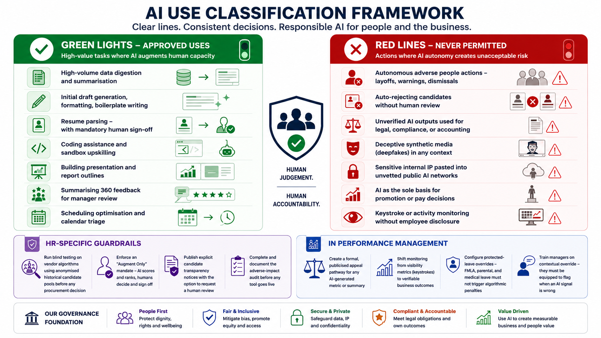

The highest-energy segment. Use case classification, HR-specific guardrails, the hardest questions of the session, and a table exercise that surfaces where your organisation's real governance gaps are hiding.
Facilitator note: This is the segment where disagreement should surface. Do not resolve tension too quickly — the discomfort is the learning. Your role here is to hold the space and ask the next question, not to have all the answers.
The classification framework
0:55 – 1:10
Effective governance draws clear lines before they are needed. These lists are starting points — every organisation must define their own extensions in writing.

Effective AI governance starts with clear classification: empowering high-value AI use while preventing unacceptable human, legal, and reputational risk.
Green lights — approved uses
High-value tasks where AI augments human capacity without replacing human judgement on critical outcomes.
Actions where AI autonomy creates unacceptable legal, ethical, or human risk — regardless of how convenient it would be.
Autonomous adverse people actions — layoffs, warnings, dismissals
Auto-rejecting candidates without human review
Unverified AI outputs used for legal, compliance, or accounting
Deceptive synthetic media (deepfakes) in any context
Sensitive internal IP pasted into unvetted public AI networks
AI as the sole basis for promotion or pay decisions
Keystroke or activity monitoring without employee disclosure
HR-specific guardrails
1:10 – 1:20
In recruitment
Run blind testing on vendor algorithms using anonymised historical candidate pools before any procurement decision
Enforce an "Augment Only" mandate — AI scores and ranks, humans decide and sign off
Publish explicit candidate transparency notices with the option to request a human review
Complete and document the adverse-impact audit before any tool goes live
In performance management
Create a formal, publicised appeal pathway for any AI-generated metric or summary
Shift monitoring from visibility metrics (keystrokes) to verifiable business outcomes
Configure protected-leave overrides — FMLA, parental, and medical leave must not trigger algorithmic penalties
Train managers on contextual override — they must be equipped to flag when an AI signal is wrong
The hard questions
Pose these one at a time. Do not answer them. Let the silence work.
Hard question 1
If your AI-assisted hiring tool had to be audited for adverse impact tomorrow, could you produce the evidence today?
Hard question 2
Does your performance management system have a documented appeal pathway for AI-generated outputs? Not a theoretical one — a real one that employees know exists and can actually use?
Hard question 3
Who signed off on the data terms for the last AI tool your HR team procured? If you cannot name a specific person within 10 seconds, you have a Stage 2 gap.
Table groups of 4–6. Mark each scenario below as: Green (approved), Red (never permitted), or Amber (approved with conditions — name the conditions).
Give 8 minutes for table discussion. Then debrief: which scenarios caused the most disagreement? Those are your governance gaps — the places where your organisation does not yet have a written position, a named owner, or a review date.
#
Scenario
Starter classification
A
AI summarises 360-degree feedback and produces a draft performance narrative for the manager to review and edit before any conversation with the employee.
Likely green
B
AI scores and ranks incoming resumes. Candidates below a score threshold are automatically archived without any human review of their application.
Red line
C
AI flags a sustained drop in an employee's digital activity metrics (keystrokes, logins, response times) and generates an alert to their line manager.
Amber — discuss
D
AI analyses promotion-ready employees across the organisation and generates a ranked shortlist for the talent review committee to consider.
Amber — discuss
E
AI drafts a first-stage performance improvement plan based on a manager's notes and the employee's historical performance data in the HRIS.
Amber — discuss
F
AI triages anonymous employee wellness survey responses and routes responses containing high-risk language to the People team for follow-up.
Amber — discuss
Debrief note: Scenarios C, D, E, and F should generate genuine disagreement. There is no single correct answer — what matters is that your organisation has a written position on each one, a named owner, and a review date attached. If the table cannot agree, neither can your organisation. That gap is the governance work ahead.
Bridge to Segment 4
We have named what AI should and should not do. The harder question follows: when AI eliminates transactional work and frees up human capacity, what does your organisation do with that time — and is your reward structure ready for the answer?